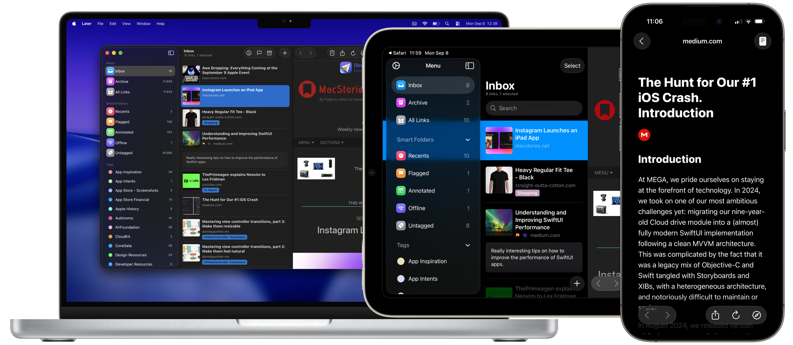

On-Device Intelligence
Everything you save in Later is accessible only by you on your devices. Later doesn't use any servers, everything happens on your device and is synced via iCloud.
Later for iPhone, iPad and Mac
The easiest way to save links, articles, and videos to read or watch later. Stay organized and never lose track of what matters.
Download on the App StoreNo ads. No tracking. Just your next great read.

Everything you save in Later is accessible only by you on your devices. Later doesn't use any servers, everything happens on your device and is synced via iCloud.
Later doesn't show any annoying ads, nor does it track you in any way. I built Later with the utmost respect for users’ privacy.
Later includes share extensions on all platforms. This means you can save to Later from any app on iOS and macOS.
Download the browser extension for Safari, Chrome or Firefox. You'll now be able to save any website you're viewing with a single click!
Later includes support for Shortcuts so you can create your own workflows. Instantly save links using the Action Button, ask Siri to save the current webpage, etc.
By default, when you save a link, Later automatically detects and removes known trackers.
Organize your saved links using tags and color-code them. A link can have multiple tags. Use the multi-selection to tag all selected links with the tags you want.
Write down anything you need, either why you saved that specific link or something to remember about that link.
Later lets you save links for offline reading, so you can view them even without a network connection.
Later lets you import saved links from Pocket, Instapaper, GoodLinks, Raindrop, and more. It also allows you to export them—you'll never be locked into using Later.
Later makes a daily backup of all your data to keep it safe. Since launching in 2020, it has never lost user data.